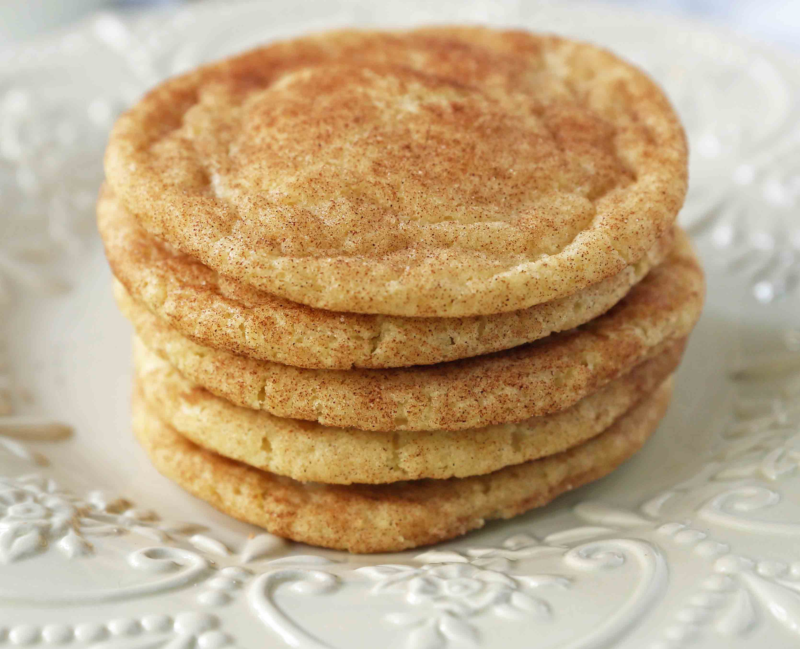

The Best Snickerdoodle Cookie Recipe. Soft and Chewy Snickerdoodle Cookies. The popular
cinnamon-sugar soft and chewy sugar cookie recipe. A recipe that has been in the family for over 30 years!

Ingredients
Instructions
Preheat oven to 350 degrees.
In a large mixing bowl, cream butter and 1 1/2 cups of the sugar for 4-5 minutes until light and fluffy. Scrape the sides of the bowl and add the eggs and vanilla. Cream for 1-2 minutes longer.
Stir in flour, cream of tartar, baking soda, and salt, just until combined.
In a small bowl, stir together sugar and cinnamon.
If time allows, wrap the dough and let refrigerate for 20-30 minutes. Roll into small balls until round and smooth. Drop into the cinnamon-sugar mixture and coat well. Using a spoon, coat for a second time, ensuring the cookie balls are completely covered. *To make flatter snickerdoodles, press down in the center of the ball before placing in the oven. This helps to keep them from puffing up in the middle. *
Place on a parchment paper-lined baking sheet. Bake for 9-11 minutes. Let cool for several minutes on baking sheet before removing from the pan.